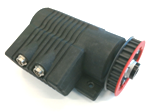

Motor© 2018, ProtoIt Platform: INFENTO |  |
Beschrijving:
De driver beschikt over twee motorpoorten om DC-motoren aan te sturen (poort 1 en 2).
Via pulse-width-modulation (pwm) wordt de snelheid van de motoren geregeld.
De motoren moeten geschikt zijn voor 24 volt en mogen niet meer dan 0,5 ampère nemen.
Verder beschikt de driver over een speciale aansluiting (poort 3) voor de aansturing van een Infento Edrive-motor.
Tenslotte kan een motor het gebruik een wielronde-teller claimen. Deze wordt apart op de driver aangesloten.
In dat geval moet het aantal tikken per omwenteling worden ingesteld.
Onderdelen:
Motor
| Adres | I2C-adres van de driver.Standaard op adres 21 ingesteld. |
| Motorpoort | Er zijn twee motorpoorten aanwezig voor de aansturing van DC-motoren. Deze zijn 1 en 2 zijn genummerd. Poort 3 is bedoeld voor de aansturing de speciale Infento Edrive-motor. Standaard op poort 3 ingesteld. |
| Max. snelh. (0.1 m/s) | De maximaal te behalen snelheid (inclusief gearing en wielomtrek).Standaard op 1,5 m/s ingesteld. |
| Versnelling (0.1 m/s2) | De toe te passen versnelling bij optrekken en afremmen.Standaard op 1,0 m/s2 ingesteld. |
| Wieldiam. (mm) | De gebruikte wieldiameter.Standaard op 318 mm ingesteld (±1 mtr omtrek). |
| Tikken per ronde | Het aantal tikken dat een wielronde-teller per ronde geeft. Als hier een hogere waarde dan 0 wordt opgegeven, zal de motor de wielronde-teller van de driver aan zich koppelen.Standaard op 0 ingesteld. |
| Opstartkracht (%) | Bij 0% vernelt de motor vanuit stilstand en anders vanuit het opgegeven percentage van volle kracht.
Bij 100% beweegt de motor meteen op volle kracht en kost het opstarten geen tijd.Standaard op 0% ingesteld. NB. Over het algemeen beginnen DC-motoren niet te draaien bij lage pwm-waardes, omdat ze de interne weerstand moeten overwinnen. Door de opstartkracht te verhogen kan ervoor worden gezorgd, dat de motor zich met de programmategels toch gedraagt alsof hij bij 0% begint. |
| Snelheid (%) | Percentage van de bij de Instellingen ingestelde maximum snelheid waarmee de motor gaat bewegen. |
| Richting | De richting waarin de motor gaat bewegen (zie Constante signalen). |
| Afstand (cm) | De af te leggen afstand. Deze functie is alleen beschikbaar als bij de Instellingen een waarde voor de Tikken per ronde is ingevuld en daarmee een wielronde-teller is geactiveerd. |
| Duur (sec) | De tijd dat de motor zal gaan draaien. |
| Start wanneer? | Bepaalt het moment waarop de motor gaat draaien. Standaard op Direct ingesteld. |
| Stop wanneer? | Bepaalt het moment waarop het draaien van de motor wordt afgebroken. Standaard op Nooit ingesteld. |
| Afstand (cm) | Geeft de afgelegde afstand vanaf het startmoment weer. Deze functie is alleen beschikbaar als bij de Instellingen een waarde voor de Tikken per ronde is ingevuld en daarmee een wielronde-teller is geactiveerd. |
| Klaar | Dit signaal wordt uitgezonden als de ingestelde afstand of tijd is bereikt. |